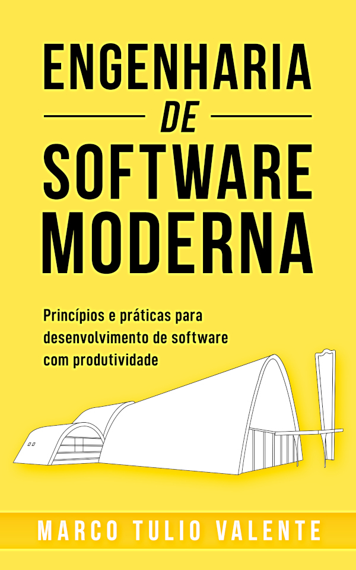

Livro Engenharia de Software Moderna, de Marco Tulio Valente
Impressões sobre o livro do professor Marco Tulio Valente, Engenharia de Software Moderna - Princípios e práticas para desenvolvimento de software com produtividade

Um livro dahora!
O subtítulo do livro, "Princípios e práticas para desenvolvimento de software com produtividade", mais que uma prescrição pessoal do autor ( o que seria válido), traz uma leitura do momento atual que vivemos, e mais que isso, não só uma leitura estática, toda a contextualização histórica e as devidas referências.
Então temos um livro com o peso e o rigor da produção científica, mas com um texto escrito de tal forma que está agradável acessível como livro de referência, como livro texto, como uma obra para reciclagem.
Enfim, uma bela viagem pelos mais variados tópicos da engenharia de software. Fico feliz em saber que uma pessoa começando sua formação pode ter a oportunidade de iniciar-se por essa essa obra, fruto de uma longa e criteriosa pesquisa de um professor brasileiro, antenado com o que ocorre no chamado mercado e na dita academia.
Sendo eu um profissional sem formação formal, é através de obras como essa que venho aprendendo e me atualizando, o que me permite manter-me nesse nicho de mercado, por mais de três décadas.
A cada capítulo, uma lista de exercícios, não só para fixação e repetição, mas especialmente voltada para reflexão dos tópicos abordados. Na página web dedicada ao livro, há material de apoio para alunos e professores, e também informações sobre cursos baseados no livro, que ocorrem regularmente.
O livro está disponível digitalmente gratuitamente na página e também para aquisição para dispositivos de leitura e impresso (ótima impressão, amo livros produzidos com o sistema Latex), e ainda dispõe de um excelente apêndice introdutório sobre GIT.
Entre os temas, destacam-se padrões de projeto, processos, requisitos, testes, refatoração e arquitetura, entre outros grandes temas.
Após passar pelo livro do prof. Marco Tulio, sinto-me revigorado na profissão que tão cedo escolhi e escolheu-me e mudou minha vida.